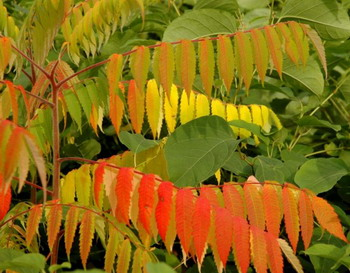
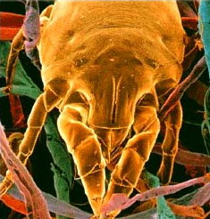
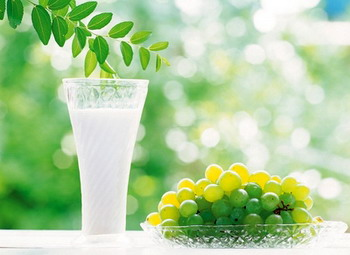
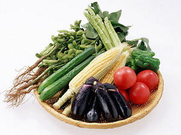
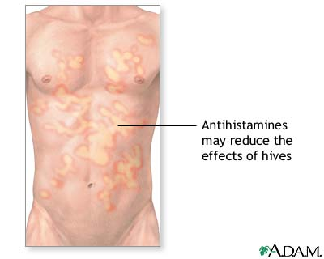
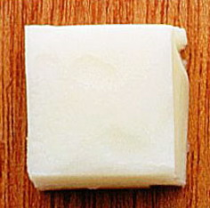
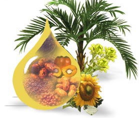

中招记
冯冯
迷失在未来 / 誊录
我母亲与我吃长素，数十年如一日，我们向来很少生病。可是今年（一九九三）春天，母子都得了病；是一种很讨厌的皮肤病，名叫荨麻疹。
荨麻疹，在西医列入过敏症，中医说是血有热毒。荨麻疹也有很多种类型，有些是由于皮肤接触了漆树或是含有化学性刺激物质的野生植物，有些是由于接触了猫狗的毛，有些由于被跳蚤咬了引起，有些是吃了含有过敏物质的食物，刺激体内分泌太多的过敏激素Histamine。
我母亲与我都没有接触漆树或什么野生植物，家里也没饲养猫狗。虽然我挺爱和猫狗玩，却不敢接近它们，邻舍的猫狗们，时常老远就咪呀喵的叫喊我，跑过来亲善一番，我也不敢摸它，顶多只是用猫语与之会话一阵，交换一下情报。例如谁家又生了几只小猫，臭鼬昨夜突袭了谁家垃圾桶，浣熊一家三口现时在何处睡午觉之类。猫语会话只不过一照面几分钟，没理由过敏得疹子。
被跳蚤咬到是最可怕的事。三十多年前，在恒春乡下海边一处农家借宿一夜，因为旅途劳顿，躺下就熟睡如死；醒来才发现农家的大黄狗早已上来与吾同床共寝，亲热得有如几十年的老朋友重逢。起床感到全身奇痒，一看，全身都是被跳蚤咬的红斑疹子，有七十多处！感谢黄狗老兄的爱顾，跑到海水中泡了半天也还是痒得难受。
有此惨痛经验，使我数十年来见到狗兄就避之大吉！所以此次荨麻疹可以断定与狗兄无关，更何况我母亲怕猫狗从不接近它们，不可能被跳蚤咬成出疹子。
我母子此次蒙难，饱受荨麻疹之苦，完全是由于误吃了荤油！害得我母亲从一月份就患此病，一直到五月，还未全好；我自己也给闹了一个多月。我母亲早睡，睡到半夜就全身出疹，红肿的一块一团一堆，痒得难受，连呼吸也困难，几次差点儿要送医院急救。我是懂得一点中西医理医药的，否则除了送医院急救还有什么选择？幸亏我还能应付，可是天天半夜闹到天亮，她的痒痛才静下来，我可说没有一夜是能安睡的！日夜又有那么多人打电话来、写信来、上门来，要求服务这样那样，又忙又累！这半年以来，我苦不堪言，瘦了二十多磅，人看来也苍老了五十年！
 病从口入。一些也没说错！我们吃长素，怎会有荤油吃呢？从前我是嘴馋爱吃蛋糕与蛋挞之类的甜食，李云鹏伯伯曾在电话叫我不可再吃蛋，我就渐渐戒了，不再吃它了。可是牛奶还在喝，喝那低脂的鲜奶，我母亲是连牛奶也不喝，自己做豆浆喝。有些医生说牛奶会引发过敏症。善哉斯言！的确是事实，有很多人喝牛奶就有各种过敏症发生，例如花粉干草热、气喘、皮肤病……，但是我喝了牛奶数十年，已改不了习惯；明知我的干草热也许是从牛奶得来的，我还是喝牛奶咖啡，真是坏习惯。
我母亲没喝牛奶，更不吃奶酪，所以疹子与奶类无关。我喝奶数十年也从未出过疹子，所以可见也无关。那么只好每一样食品都去“格物致知”，学学朱子的一天格一物，看看是什么食物在作怪。
“格物”了几个月，终于“致知”了。原来作祟的是荤油，这荤油是隐藏在一些素食食品之内的作料！
 一九九二年冬天，有人来访，很诚心诚意的带了一批素火腿与素食面条之类来供养我母子。我们向来不吃这些素食成品，只吃新鲜菜蔬，连干制冬菇、金针菜这些干菜都很少吃的，人们送来供养的冬菇累积十多纸箱，我都是送到各佛寺去供养僧宝与四众的。我母亲年老无牙，吃不来冬菇，只可吃洋菇，我又忙，没时间去做斋菜，所以都不吃它。我们难得吃什么美味的素食、素点心。那一回，有人送了那些名牌的素品，什么素火腿、素鸡、素鸭、素面。本来我就不喜欢这些荤名，可是人家一番专诚，万里送来，又逢冬天下雪，难以出门购物，我想吃这些也无妨；明知也不过都是些豆粉、豆皮做的，加些味精罢了，看它印出的材料单：豆腐皮、面筋、元豆粉、味精、盐、糖、植物油（有的写棕榈油）。这又何妨吃呢？
味道堪称是美味，可是吃来觉得有些像荤肉，总怀疑是有肉在内或有荤油，朋友说我是太神经过敏，听到叫“素鸡”、“素火腿”也敏感起来了。他们说放心吃吧！保证是素的，不会买荤的来害您破戒的。
一九九二至九三年的冬春之交，温哥华五十年来空前大雪，下雪五十多将近六十天之久，路上寸步难行。家中罐头都吃光了，不由不吃那批素品，怎料到吃了一个星期之后，母子两人都全身红肿，红云块块，起先是肚皮起了麻疹，接着是腋下、四肢、胸背、脸上，嘴也肿得像猪嘴似的，鼻子也肿了，呼吸困难，差一点断气！幸亏我还懂医药，知道怎样急救，否则不堪设想，若是叫救护车去医院，以此地各大医院服务之恶劣（我们都视医院为畏途），没病住院也变大病啦！我怎敢把母亲送院急救？只有靠自己罢！一面祈求观音菩萨，一面运用我的中西医学知识，才把母亲救回来！假如我慌乱做一团，送母亲去医院，那还不知后果如何呢！
 重新再拿那些素品包装胶纸来研究，我发现了问题所在──棕榈油，我从一开头就觉得它吃来似猪油，不似植物油！我于是拿一些食品去请一个在大学营养系做研究员的洋朋友化验。几天之后，他报告我：“百分之八十成分是浓缩猪油；百分之十是人造植物油，百分之三是人造棕榈芳香精，百分之二是防腐剂……。”
这才揭开了谜底，原来我们是吃了浓缩猪油中毒！浓缩动物油进入血管引起真皮下积水，激发全身的Histamine过敏激素！(注)
我从幼吃长素，最怕荤油，我的体质无法抵抗荤油，所以我从不在外面馆子吃饭。偶然被人强拉去馆子吃一碗”阳春面“，面还没吃完手腕已出现了麻疹，就知面的汤中有猪油。馆子厨司习惯地在面或菜馔上桌之前浇一杓猪油以使它好看又香一点。他们当然不会知道竟有人碰一滴荤油也会全身出疹。像我这样脆弱的人，恐怕不多见吧！
友人的化验报告，指出那些棕榈油并不是真的棕榈油，只是浓缩的猪油。他拿了样品来给我看，原来那只猪油罐头是大桶子制的，二十多磅一桶，很便宜，才几块钱，比素油便宜了十多倍，它的牌名叫做“棕榈油”，印着一株棕榈树图案。他说，可能是素食厂家不懂英文，不知它上面的“PALM LARD”的第二个字是“猪油”，以为它是纯棕榈油。 谜底揭开了！我认为厂家也未必有意使用猪油来做素面、素腿什么的去破人斋戒；很可能他们根本不知道那不是真正的棕榈素油，他们只是拣便宜的油就大批买来使用而已；自然他们更不会知道有人吃了他的产品会中毒几乎致死。我认为厂家不是有意害人的，只是无意的错用荤油，我想他们还不致于只顾赚钱而罔顾商业道德吧！有谁会那么心毒蓄意去破人素戒呢！不知者不罪，不过希望他们今后慎重选择用油吧！
它太便宜，又香，拿来制作素品成本低又好吃。他说棕榈本身没有多少油可榨出来，不像油菜种子或棉花种子可以大量榨油；棕榈也不是像油菜那么可以大量生产的植物。他说：在加拿大是很少厂家采用棕榈牌猪油做点心的，这些油都是大批外销去给远东国家，因为东方人一般较为爱吃猪油。美加很少人吃猪油，油炸食品都用油菜子油，所以猪油因为无市场而跌价。
我再进一步调查，原来此地几家佛寺的缁素，很多天天吃那一个名牌的素面，很多位尼师也患上了荨麻疹而不知是什么缘故，她们只是自怨自艾是业障病，怎知这份业障病的来源就是猪油呢？经我劝告而停止食用之后，她们也渐渐少发麻疹了，我现是到处劝告素食者，看清所谓素食食品的成分！ 有位友人说你写这篇文章当心厂家控告你破坏他们的声誉啊！那你倾家荡产也赔不起啊！我倒觉得有义务必须把这件事公开，本文并无破坏任何厂商名誉，上文已说过可能他们根本不知道这些进口棕榈油根本就是猪油。假如这样也会引起他们控告我，那也只好打官司吧！假如赔掉房子去赔他们，我只要能减少人间疾苦，又何妨赔呢！
不可只从“素食”的外表名称就轻信它是真的素食！上文说过，厂家往往也不知什么油是素什么不是，他们不会有意使用荤油来害人；但是，吃素者却受了厂商无知的疏忽所害啊！厂家还是使用常用的植物油，例如：豆油、棉子油、油菜子油、橄榄油、花生油为佳。
网注：冯冯对猪油有极大过敏，对樱花与玫瑰花众花粉亦招架不住，亦难以承受治疗过敏药物 (CLARITIN)的药力──该药小如饭粒，尚须切作四份之一服用，方降低心跳加剧的副作用。
原载《天华》第170期：1993年7月1日